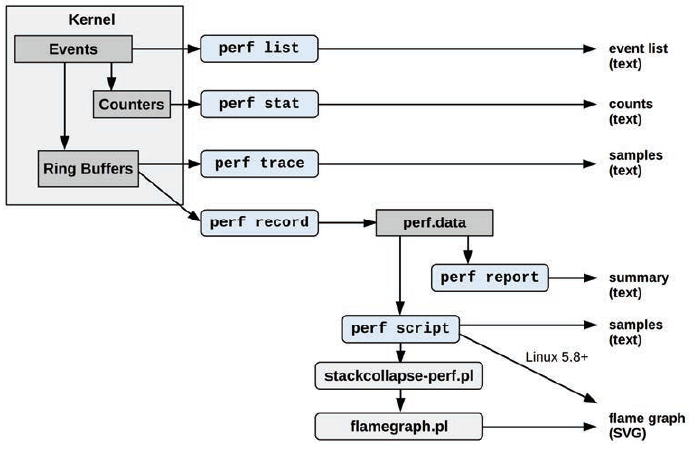

perfperf has couple modesperf statperf record + perf reportperf topperf traceperf basic workflow
perf statFor stats counting (perf stat), it uses several sources
perf provides mappings for commonly used performance counters. List of available mapping names can be viewed with perf list
perf doesn’t provide mappings for all performance counters for every CPU architecture. If the PMC you are looking for doesn’t have a mapping, it can be collected with the following syntax:
$ perf stat -e cpu/event=0xc4,umask=0x0,name=BR_INST_RETIRED.ALL_BRANCHES/ -- ./a.exe
tracepoint （以下简称"tp"）是“埋”在内核源码中的一些原生 hook（如果是埋在用户态的代码中则是 USDT），在这个 hook 点位上你可以提取一些信息，由于是在固定的位置，且在编译阶段就已确定，因此被称为「静态追踪点」。而像 systemtap 用的 kprobe/uprobe，可以在几乎任一指令处打点，这种“野生”的 hook 就属于「动态追踪点」
| 静态 | 动态 | |
|---|---|---|
| 用户态 | USDT | uprobe |
| 内核态 | tracepoint | kprobe |
perf stat is efficient: it counts software events in kernel context and hardware events using PMC registers.
The stat subcommand supports many options, including:
-a: Record across all CPUs (this became the default in Linux 4.11)-e event: Record this event(s)--filter filter: Set a Boolean filter expression for an event-p PID: Record this PID only-t TID: Record this thread ID only-G cgroup: Record this cgroup only (used for containers)-A: Show per-CPU counts-I interval_ms: Print output every interval (milliseconds)-v: Show verbose messages; -vv for more messagesperf list # print available metrics
perf list block # List events with names containing the string “block”:
perf stat cmd # print default metrics
perf stat -d cmd # "-d" short for "--detailed", print more detailed stats. Can be specified multiple times each with more detailed stats
perf stat -p PID # for the specified PID, until Ctrl-C:
# "-a" short for "--all-cpus". Performance counter statistics for the entire system, for 10 seconds:
perf stat -a --sleep 10
#print selected metrics
perf stat -e cycles,instructions,brances,branch-misses,cache-references,cache-misses ./cmd
# Various CPU level 1 data cache statistics for the specified command:
perf stat -e L1-dcache-loads,L1-dcache-load-misses,L1-dcache-stores ./cmd
# Various CPU data TLB statistics for the specified command:
perf stat -e dTLB-loads,dTLB-load-misses,dTLB-prefetch-misses ./cmd
# Various CPU last level cache statistics for the specified command:
perf stat -e LLC-loads,LLC-load-misses,LLC-stores,LLC-prefetches ./cmd
# Count scheduler events for the specified PID, for 10 seconds:
perf stat -e 'sched:*' -p PID sleep 10
# Count system calls by type for the specified PID:
perf stat -e 'syscalls:sys_enter_*' -p PID
perf recordYou must first collect the samples using perf record. This generates an output file called perf.data. That file can then be analyzed, possibly on another machine, using the perf report and perf annotate
it is non-invasive, low-overhead and profile the whole stack, including your app, libraries, system calls AND kernel with CPU. The average overhead of HW event-based sampling (EBS) is about 2% on a 1ms sampling interval.
perf record is statistical profiling tool. Perf_events is based on event-based sampling. The period is expressed as the number of occurrences of an event, not the number of timer ticks. A sample is recorded when the sampling counter overflows, i.e., wraps from 2^64 back to 0. It uses program hardware performance event monitor unit (PMU) to overflow after some number of counts
-e cycles -c 1000000 , perf writes -1000000 to counter and enable counting cycles; It will archive one sample every 1 million instructions.-F or without freq/period argument it will autotune valueperf will record current PC (EIP, instruction pointer, i.e. where was the program when it was interrupted) and/or callstack; (perf has Interrupt Service Routine (ISR) for doing this)perf record with PMCs, a default sample frequency (typically 4000) is used so that not every event is recorded.perf --help record
-a: Record across all CPUs (this became the default in Linux 4.11)-e event: Record this event(s)--filter filter: Set a Boolean filter expression for an event-p PID: Record this PID only-t TID: Record this thread ID only-G cgroup: Record this cgroup only (used for containers)-g: Record stack traces-o file: Set output file-v: Show verbose messages; -vv for more messages--call-graph mode: Record stack traces using a given method
--call-graph fp: Selects frame pointer-based stack walking (the default).
--fnoomit-frame-pointer. Historically, frame pointer (RBP) was used for debugging since it allows us to get the call stack without popping all the arguments from the stack (stack unwinding). The frame pointer can tell the return address immediately. However, it consumes one register just for this purpose, so it was expensive.--call-graph dwarf: Selects debuginfo-based stack walking, which requires debuginfo for the executable to be available.
--call-graph lbr: Selects Intel last branch record (LBR) stack walking, a processor-provided method (although it is typically limited to a stack depth of only 16 frames).# Sample on-CPU functions for the specified command, at 99 Hertz (roughly 99 events per second):
perf record -F 99 command
perf report*perf report* will parse perf.data to get all PC recorded in it. It will count how many times each PC was sampled to build histogram [PC] -> sample_count. Every PC will be associated with the exact function it belongs (perf report will parse memory map, as mmap events are recorded in perf.data too, open every binary used, find symbols table of every binary).
https://man7.org/linux/man-pages/man1/perf-report.1.html
perf --help report
--tui: Use the TUI interface (default)--stdio: Emit a text report--header: list data header-i file: Input file-n: Include a column for sample counts-g options: Modify call graph (stack trace) display options-s or --sort= key1,key2: sort the output by keys, check details in --help-g or --call-graph=: display call chains, check details in --help# Show perf.data in an ncurses browser (TUI) if possible:
perf report
# Show perf.data as a text report, with data coalesced and counts and percentages:
perf report -n --stdio
# List all perf.data events, with data header (recommended):
perf script --header
# List all perf.data events, with my recommended fields (needs record -a; Linux < 4.1 used -f instead of -F)
perf script --header -F comm,pid,tid,cpu,time,event,ip,sym,dso
# Generate a flame graph visualization (Linux 5.8+):
perf script report flamegraph
# Disassemble and annotate instructions with percentages (needs some debuginfo):
perf annotate --stdio
perf scriptThe perf script subcommand by default prints each sample from perf.data, and is useful for spotting patterns over time that may be lost in a report summary.
perf schedThe sched command records and reports scheduler statistics. Scheduler events are frequent, so this type of tracing incurs significant CPU and storage overhead. Be careful with this overhead, as it may perturb
production applications.
perf sched {record|latency|script|map|timehist}
## example usage
# run record first
$ perf sched record -- sleep 10
# report the per-process scheduling latency
$ perf sched latency
# perf sched also has map and timehist reports for displaying the scheduler profile in different ways.
# timehist report shows per-event details
$ perf sched timehist
for instructions executed speculatively, the CPU keeps their results without immediately committing their results. when it comes out that the speculation happens to be wrong, the CPU throws away all the changes done by speculative instructions and does not retire them. We can usually expect the number of executed instructions to be higher than the number of retired instructions.
There is a fixed performance counter (INST_RETIRED.ANY PMC) that collects the number of retired instructions.
$ perf stat -e instructions ./a.exe
2173414 instructions # 0.80 insn per cycle
# or just simply do:
$ perf stat ./a.exe
the percentage of time the CPU was busy. Technically, a CPU is considered utilized when it is not running the kernel idle thread.
the CPU might be highly utilized even though it is stalled waiting on memory accesses. Or spin while waiting for resources to proceed in multi-thread env.
CPU Utilization = CPU_CLK_UNHALTED.REF_TSC PMC counts / TSC
perf automatically calculates CPU utilization across all CPUs on the system:
$ perf stat -- a.exe
0.634874 task-clock (msec) # 0.773 CPUs utilized
CPI = 1 / IPCIPC = INST_RETIRED.ANY (retired instruction) / CPU_CLK_UNHALTED.THREAD$ perf stat -e cycles,instructions -- a.exe
2369632 cycles
1725916 instructions # 0,73 insn per cycle
# or just simply do:
$ perf stat ./a.exe
$ perf stat -e uops_issued.any,uops_executed.thread,uops_retired.all -- a.exe
2856278 uops_issued.any
2720241 uops_executed.thread
2557884 uops_retired.all # UOPS_RETIRED.ALL event is not available since Skylake. Use UOPS_RETIRED.RETIRE_SLOTS.
The core clock cycles counter is counting clock cycles at the actual clock frequency that the CPU core is running at, rather than the external clock (reference cycles). The core clock cycle counter is very useful when testing which version of a piece of code is fastest because you can avoid the problem that the clock frequency goes up and down.
# Metric "cycles" counts real CPU cycles, i.e., taking into account frequency scaling.
$ perf stat -e cycles,ref-cycles ./a.exe
43340884632 cycles # 3.97 GHz
37028245322 ref-cycles # 3.39 GHz
10,899462364 seconds time elapsed
Linux perf users can collect the number of L1-cache misses by running:
$ perf stat -e mem_load_retired.fb_hit,mem_load_retired.l1_miss,mem_load_retired.l1_hit,mem_inst_retired.all_loads -- a.exe
29580 mem_load_retired.fb_hit
19036 mem_load_retired.l1_miss
497204 mem_load_retired.l1_hit
546230 mem_inst_retired.all_loads
further break down L1 data misses and analyze L2 cache behavior by running:
$ perf stat -e mem_load_retired.l1_miss,mem_load_retired.l2_hit,mem_load_retired.l2_miss -- a.exe
19521 mem_load_retired.l1_miss
12360 mem_load_retired.l2_hit
7188 mem_load_retired.l2_miss
In branch misprediction, the CPU is required to undo all the speculative work that it has done recently. This typically involves a penalty between 10 and 20 clock cycles.
Linux perf users can check the number of branch mispredictions by running:
$ perf stat -e branches,branch-misses -- a.exe
358209 branches
14026 branch-misses # 3,92% of all branches
# or simply do:
$ perf stat -- a.exe